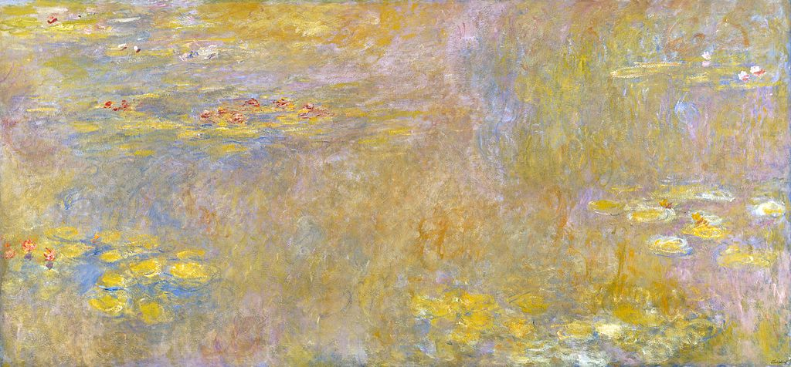

<head>
<meta charset="UTF-8" />
<meta name="keywords" content="drawing, painting" />
<meta name="description" content="drawings by Sunjy" />
<title>Sunjy</title>
<link rel="shortcut icon" type="image/x-icon" href="../../mImages/mCommon/favicon.ico" media="screen" />
<link rel="stylesheet" type="text/css" href="../../mCsses/mCommon/mCssA.css" />
<link rel="stylesheet" type="text/css" href="../../mCsses/mCommon/mCssB.css" />
<link rel="stylesheet" type="text/css" href="../../mCsses/mCommon/mCssC.css" />
<link rel="stylesheet" type="text/css" href="../../mCsses/mCommon/mCssD.css" />
<link rel="stylesheet" type="text/css" href="../../mCsses/mContent/mCssA.css" />
<link rel="stylesheet" type="text/css" href="../../mCsses/mContent/mCssB.css" />
<link rel="stylesheet" type="text/css" href="../../mCsses/mContent/mCssC.css" />
<link rel="stylesheet" type="text/css" href="../../mCsses/mContent/mCssD.css" />
</head>
<script type="text/javascript" src="../../mScripts/mContent/mContentAA.js" /></script>
<script type="text/javascript" src="../../mScripts/mContent/mContentAB.js" /></script>
<script type="text/javascript" src="../../mScripts/mContent/mContentAC.js" /></script>
<script type="text/javascript" src="../../mScripts/mContent/mContentAD.js" /></script>
<script type="text/javascript"></script> 
<script type="text/javascript">
document.write('<div class="mImgAbsolute"></div>');
/*
document.write('<p class="mFontSizeBColor" />From a white paper...</p>');
document.write('<table class="center"><tr><td>');
document.write('');
document.write('</td></tr></table>');
*/
</script>


<script type="text/javascript">
document.write('<p class="mFontSizeBColor" />Water Lilies</p>');
document.write('<p class="mFontSizeSColor" />By Claude Monet. “Water Lilies” portrays the water-lily pond, from Monet’s garden in Giverny, with the sky and sun reflecting off the lily pond. Monet attempted to capture the continually changing qualities of light, color, water, sky, and lilies by dissolving all the elements in:<br><br>“the refuge of peaceful meditation in the center of a flowering aquarium.”<br><br>Claude Monet painted nearly 250 paintings in his series of “Water Lilies.”  The constant changes in the water surface, based on the direction of the sun during the day, the changing seasons, and the changing weather continued to sustain Monet’s interest in his water lilies pond.<br><br>The paintings depicted Monet’s flower garden at his home in Giverny and were the main focus of Monet’s artistic production during the last thirty years of his life.<br><br>Many of the works were painted while Monet suffered from cataracts. His “Water Lilies” paintings can be found in many museums across the globe.<br><br>Oscar-Claude Monet was a founder of French Impressionist painting, and the term “Impressionism” is derived from the title of his painting Impression, “Soleil Levant” or “Impression, Sunrise,” which was exhibited in 1874.<br><br>Monet adopted a method of painting in which he painted the same scene many times to capture the changing of light and the passing of the seasons.<br><br>Monet is known for having produced a series of paintings on versions of the same subject and perspective. Examples include his series of the “Valley of the Creuse” series and his famous series of “Haystacks” and “Water Lilies” paintings.<br><br>From 1883 Monet lived in Giverny, where at his home, he developed a garden landscape that included the lily ponds that would become the subjects of his best-known works.<br><br>In 1899 he began painting the water lilies, first with a Japanese bridge as a central feature, and later in the series of large-scale paintings, with the water lilies as the main feature. This series occupied him for the last 20 years of his life.</p>');
document.write('<table class="center" /><tr><td>');
document.write('<br>“the refuge of peaceful meditation in the center of a flowering aquarium.”<br><br>Claude Monet painted nearly 250 paintings in his series of “Water Lilies.”  The constant changes in the water surface, based on the direction of the sun during the day, the changing seasons, and the changing weather continued to sustain Monet’s interest in his water lilies pond.<br><br>The paintings depicted Monet’s flower garden at his home in Giverny and were the main focus of Monet’s artistic production during the last thirty years of his life.<br><br>Many of the works were painted while Monet suffered from cataracts. His “Water Lilies” paintings can be found in many museums across the globe.<br><br>Oscar-Claude Monet was a founder of French Impressionist painting, and the term “Impressionism” is derived from the title of his painting Impression, “Soleil Levant” or “Impression, Sunrise,” which was exhibited in 1874.<br><br>Monet adopted a method of painting in which he painted the same scene many times to capture the changing of light and the passing of the seasons.<br><br>Monet is known for having produced a series of paintings on versions of the same subject and perspective. Examples include his series of the “Valley of the Creuse” series and his famous series of “Haystacks” and “Water Lilies” paintings.<br><br>From 1883 Monet lived in Giverny, where at his home, he developed a garden landscape that included the lily ponds that would become the subjects of his best-known works.<br><br>In 1899 he began painting the water lilies, first with a Japanese bridge as a central feature, and later in the series of large-scale paintings, with the water lilies as the main feature. This series occupied him for the last 20 years of his life." />');
document.write('</td></tr></table>');
</script>


